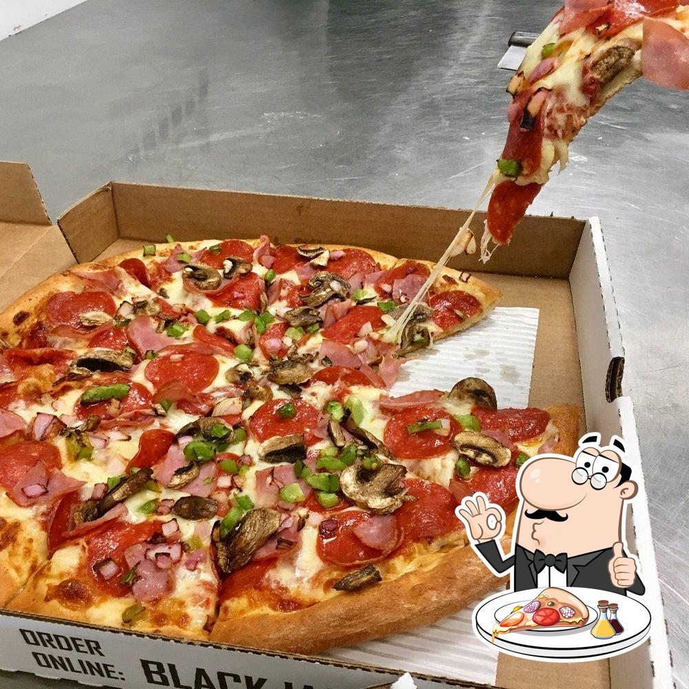

The Unilever Canteen Ordering System is an innovative platform designed to transform the workplace dining experience.
Through rigorous and comprehensive business analysis approach which includes —Stakeholder Analysis, RACI matrix
and process flow mapping—we leveraged collaboration tools like Jira and Confluence to return a result driven solution streamlining intra‑building meal ordering and delivery.
Employees can now order without visiting the canteen, eliminating long queues and delays and preserving productive work time.

XYZ Supplies is a nationwide retailer of office supplies, technology products, furniture, and appliances, serving corporate clients, home offices,
and individual consumers across multiple regions in the US. Committed to enhancing customer service and overall performance,
the company enlisted me as a consulting business analyst. Using its sales data, I built an Excel-based dashboard with corresponding and integrated slicers to uncover actionable insights accross KPIs and deliver data-driven recommendations that inform strategic business decisions.
BikeGear Solutions is a specialist retailer offering premium bike racks and accessories to customers in Canada, the United States, and Australia.
In my role as a consulting Business Analyst, I created a dashboard with interactive slicers to showcase key performance indicators and regional data.
This dashboard highlights trends and performance comparisons, enabling the company to make data-driven, actionable recommendations, strategic decisions and to extrapolate and allocate resources accordingly.

Blackjack Pizza is a dynamic pizza company dedicated to delivering a unique customer experience through an extensive selection of toppings, premium ingredients,
and multiple pizza types and sizes. To achieve their goals and position themselves as an industry leader, they engaged me as a Business Analyst to identify opportunities, analyse sales trend, deduce customer preferences, streamline operations, and provide data-driven strategies overall.
I collaborated with stakeholders in Xpress SuperStore—a bustling e‑commerce retailer of tech gadgets—to turn raw data into clear, actionable insights.
I dove into their customer records, order histories, payment logs, and product catalogs and wrote queries to uncover patterns in buying behavior, payment preferences, delivery performance, and sales trends using SQL.
My mission was to translate those discoveries into recommendations that would sharpen marketing efforts, streamline operations, and ultimately boost revenue and customer satisfaction.
This projects covers a certain insurance company transitioning from a B2B business model to B2C. As part of a team of business analysts and other stakeholders, I collaborated with other team members to develope a detailed BRD(business requirement document)
This document summarises the project, clarifies the project in-scope and out of scope, functional and non-functional requirememnts, list of stakeholders, requirement elicitation, risk management matrix, RACI matrix, power interest matrix, project management timeline etc
This project covers the development of a web portal to automate the delivery process, enhance efficiency and improve transparency. It monitors the performance of the delivery process from the end-end customers.
As a business analyst, I collaborated with stakeholders to develope a BRD for this project with particular focus on the inefficient AS-IS current state and the proposed TO-BE future state of the new automated system to optimise processes for H & T logistics company.
the main courier partners for Jumia e-commerce company.